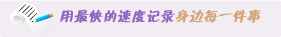
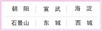

设为首页
|
加入收藏
|
联系方式
|
在线邮箱
此页面上的内容需要较新版本的 Adobe Flash Player。
此页面上的内容需要较新版本的 Adobe Flash Player。
此页面上的内容需要较新版本的 Adobe Flash Player。

[2012-10-1] 最新解压松弛美容
[2012-10-1] 美白大王讲座
[2012-10-1] 产后的身材护理
[2012-10-1] 赶走衰老让青春常驻
[2012-10-5] steve lee将在北京开讲
[2012-10-5] 最新抗衰老药品半价销售
[2012-10-5] 近期将举行免费体检活动
[2012-10-5] 儿童近期享受3折优惠

Copyright 2003-2008, 版权所有weimin.com
北京市朝阳区金台路为民医院 电话：010-12345678 传真：010-87654321 邮编：100025